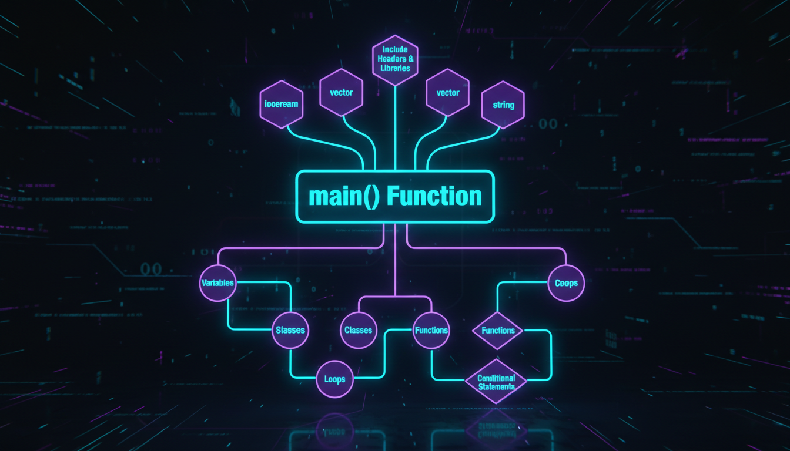

Компоненти програми, функція main, простори імен, коментарі

Рис. 3.1 — Структура програми на C++ та її компоненти
Кожна програма на C++ складається з кількох ключових компонентів. Розуміння їх взаємодії — основа успішного програмування:
Директива #include вставляє вміст іншого файлу у поточний файл. Є два формати:
// Формат 1: Системні заголовки (шукаються у системних директоріях)
#include <iostream>
#include <vector>
#include <string>
#include <cmath>
// Формат 2: Власні заголовки (шукаються у поточній директорії)
#include "myheader.h"
#include "utils/functions.hpp"| Заголовок | Призначення |
|---|---|
| <iostream> | Введення/виведення (cin, cout, cerr) |
| <fstream> | Робота з файлами |
| <string> | Клас std::string |
| <vector> | Динамічний масив |
| <map>, <set> | Асоціативні контейнери |
| <cmath> | Математичні функції |
| <algorithm> | Алгоритми STL |
| <ctime>, <chrono> | Робота з часом |
Функція main() — єдина обов'язкова функція в програмі C++. З неї починається виконання.
// Варіант 1: Проста форма
int main() {
// код програми
return 0;
}
// Варіант 2: З аргументами командного рядка
int main(int argc, char* argv[]) {
// argc — кількість аргументів
// argv — масив рядків-аргументів
std::cout << "Програма: " << argv[0] << std::endl;
return 0;
}
// Варіант 3: З аргументами (сучасний C++)
int main(int argc, char** argv) {
for (int i = 0; i < argc; i++) {
std::cout << "Аргумент " << i << ": " << argv[i] << std::endl;
}
return 0;
}Значення, що повертається з main():
Простір імен — це контейнер для ідентифікаторів (змінних, функцій, класів), що запобігає конфліктам імен.
#include <iostream>
// Використання повного імені
std::cout << "Hello" << std::endl;
// Директива using (можна використовувати без std::)
using namespace std;
cout << "Hello" << endl;
// Використання окремих елементів
using std::cout;
using std::endl;
cout << "Hello" << endl;У великих проєктах та заголовкових файлах ніколи не використовуйте using namespace std; у глобальній області видимості. Це може призвести до конфліктів імен. Використовуйте повні імена або вибіркові using.
Коментарі пояснюють код для людей. Компілятор повністю їх ігнорує.
// Це однорядковий коментар
/* Це багаторядковий
коментар. Він може
займати кілька рядків */
/*
* Це стиль документації (Javadoc/Doxygen)
* @param x — вхідне число
* @return результат обчислення
*/
int calculate(int x) {
return x * 2; // однорядковий коментар після коду
}int age = 25; // ціле число
double price = 19.99; // число з плаваючою точкою
char grade = 'A'; // символ
bool isActive = true; // булеве значення
std::string name = "Ivan"; // рядок#include <iostream>
#include <string>
int main() {
std::string name;
int age;
// Виведення
std::cout << "Введіть ваше ім'я: ";
// Введення
std::cin >> name;
std::cout << "Введіть ваш вік: ";
std::cin >> age;
// Виведення результату
std::cout << "Привіт, " << name << "!" << std::endl;
std::cout << "Вам " << age << " років." << std::endl;
return 0;
}/*
* Програма: Калькулятор площі прямокутника
* Автор: C++ Mastery
* Опис: Обчислює площу прямокутника за заданими сторонами
*/
// === ДИРЕКТИВИ ПРЕПРОЦЕСОРА ===
#include <iostream>
// === ОГОЛОШЕННЯ ПРОТОТИПІВ ===
double calculateArea(double length, double width);
void printResult(double area);
// === ГОЛОВНА ФУНКЦІЯ ===
int main() {
double length, width;
std::cout << "=== Калькулятор площі ===" << std::endl;
std::cout << "Введіть довжину: ";
std::cin >> length;
std::cout << "Введіть ширину: ";
std::cin >> width;
double area = calculateArea(length, width);
printResult(area);
return 0;
}
// === ВИЗНАЧЕННЯ ФУНКЦІЙ ===
double calculateArea(double length, double width) {
return length * width;
}
void printResult(double area) {
std::cout << "Площа прямокутника: " << area << std::endl;
}Дотримання єдиного стилю кодування важливе для читабельності:
| Правило | Рекомендація |
|---|---|
| Відступи | 4 пробіли (без табуляцій) |
| Фігурні дужки | Відкриваюча на тому ж рядку (K&R стиль) |
| Імена змінних | lowerCamelCase: studentName, totalCount |
| Імена функцій | lowerCamelCase: calculateSum(), printResult() |
| Імена класів | UpperCamelCase: StudentManager, DataProcessor |
| Константи | UPPER_CASE: MAX_SIZE, PI_VALUE |
| Довжина рядка | Максимум 80-120 символів |